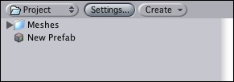
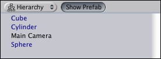
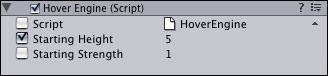

Previous
Previous
A Prefab is a reusable Game Object that is stored in the Project View. Prefabs can be inserted into any number of scenes, multiple times per scene. When you add a Prefab to a scene, you create an instance of it. All Prefab instances are linked to the original Prefab and are essentially clones of it.
No matter how many instances exist in your project, when you make any changes to the Prefab you will see the change applied to all instances. Whether your Prefab is a single Game Object or a group of Game Objects, a change made anywhere in the Prefab's Hierarchy will always be applied to its instances.
Creating Prefabs
In order to create a Prefab, you must make a new, blank Prefab using the menu. This blank Prefab contains no Game Objects, and you cannot create an instance of it. Think of a new Prefab as an empty container, waiting to be filled with Game Object data.

A new, empty Prefab. It cannot be instanced until you fill it with a Game Object.
It's easy to fill the Prefab with an existing Game Object. You use a Game Object that you've built in Hierarchy View. Here are the precise steps for creating a new Prefab:
|
After you have performed these steps, the Game Object and any children it contains have become the first instance of the Prefab. From here, creating multiple instances of the Prefab is simple.
Instantiating Prefabs
To create a Prefab instance in the current scene, Drag the Prefab from the Project View into the Scene or Hierarchy View. This will copy the top-level Game Object and any child Game Objects from the Prefab to the scene. These Game Objects are linked to the Prefab, as displayed by the blue text used for their name in the Project View.

Three of these Game Objects are linked to Prefabs. One of them is not.
More information about instantiating prefabs from your game scripts is in Instantiating Prefabs page.
Inheritance
Inheritance means that whenever the Prefab changes, those changes are applied to all linked Game Objects. For example, if you add a new script to a Prefab, all of the linked Game Objects will now contain the script as well. However, it is possible to change the properties of a Prefab instance while keeping the link intact. All public properties in the Inspector of a linked Game Object will have a checkbox. This checkbox is the Override Flag. If the override flag of any property is enabled, that property will not be affected by changes in the Prefab.
Stated simply, this allows you to modify linked Game Objects to make them unique from their Prefabs, without breaking the Prefab link.

A linked Game Object with no overrides enabled.

A linked Game Object with one override enabled.
A property's override flag is automatically enabled when you change it in the Inspector.
There are certain types of changes that will break the link between a Game Object and its Prefab. These are the basic rules for keeping a Prefab link:
- You cannot add a new Component to a linked Game Object
- You cannot remove a Component from a linked Game Object
- You cannot attach other Game Objects as children to a linked Game Object
If you perform any of these actions, you will see a warning message telling you that the Prefab link will be broken if you continue. When a Game Object's link to a Prefab has been broken, changes to the Prefab will no longer affect that particular Game Object.
If you want to make a change to all Prefab instances that requires an action which will break the link, you can reconnect the changed Game Object to its original Prefab. This will cause the Prefab to adopt the changes and all linked Game Objects to that Prefab will also be changed.
Uploading Changes
When creating or editing complex Prefabs, it is easier to instantiate them in the scene, edit the instance, and upload the changes to the Prefab itself. This workflow will allow you to view and tweak the Prefab in Scene View. Once you're done with your edits, select the root of the linked instance Game Object and choose Game Object -> Upload changes to Prefab from the main menu. All of the changes are then copied back to the Prefab, and applied to all other inheriting objects in the scenes.
Alternatively, you can use drag & drop to upload your changes. Drag the instanced Game Object back to the Prefab it came from. It is important that you change and upload a linked instance and not a random Game Object that is unrelated to the Prefab. If you do, all other linked instances will have their Components and properties overriden.
Uploading changes using drag & drop can cause unwanted data loss if you drop a different Game Object onto the Prefab. Using the Upload Changes to Prefab menu option is safer, as it will only work when the selected Game Object is a linked instance. If you drag & drop a different Game Object onto the Prefab, a confirmation pop-up will appear, verifying that you want to change a Prefab. If you click yes, the data that existed in your Prefab and its linked instances will be replaced. This operation cannot be undone so please be sure that you want to make a replacement, or always use Upload Changes to Prefab to play it safe.
Connecting Game Objects to Prefabs
It is possible to apply a Prefab to an existing, unlinked Game Object. This will add any of the Prefab's components that aren't contained in the Game Object and link it to the Prefab. This is most useful in specialized cases. To connect an existing Game Object to a Prefab, hold Alt and drag the Prefab from the Project View onto the Game Object in the Hierarchy View. The Game Object will now be a linked instance of the Prefab. This action will not change the Prefab itself, but will add or remove Components & child Game Objects to or from the Game Object you've linked.
Importing Prefabs
When you place a mesh asset into your Assets folder, Unity automatically imports the file and generates a prefab out of the mesh. This Prefab is a little bit different from regular Prefabs, because it is built from the asset file itself. Because the Prefab is dependent on the asset file itself, whenever you make changes to the asset in your 3d art package, all changes will be reflected in all instantiated prefabs.
You are free to instantiate an asset Prefab and alter the instance, but you will not be able to upload changes to the Prefab. This is because uploading the data would alter the asset file itself. When you have altered an asset instance to your liking, create a new empty Prefab and drag the Game Object to it. Now you have a standard Prefab linked to the Game Object and can upload changes normally.
Here are some clear steps:
|